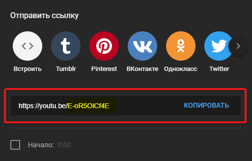
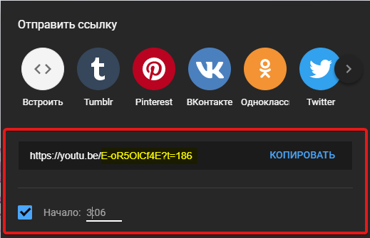
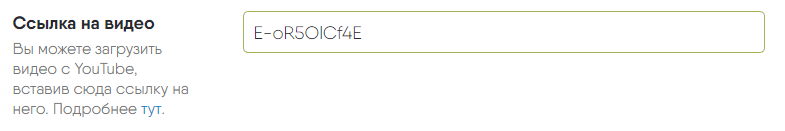

- Откройте ссылку на видео, нажав на кнопку «поделиться» или любым другим способом.
-
Скопируйте идентификационный код из ссылки, как показано на следующем примере:

-
Если вам нужно, чтобы видео запускалось с определенного момента, скопируйте часть ссылки, как на следующем примере:

-
При создании нового поста, вставьте скопированный фрагмент ссылки в поле «Ссылка на видео», как показано не следующем примере:

- После сохранения, видео будет загружено и отображено в вашем новом посте.